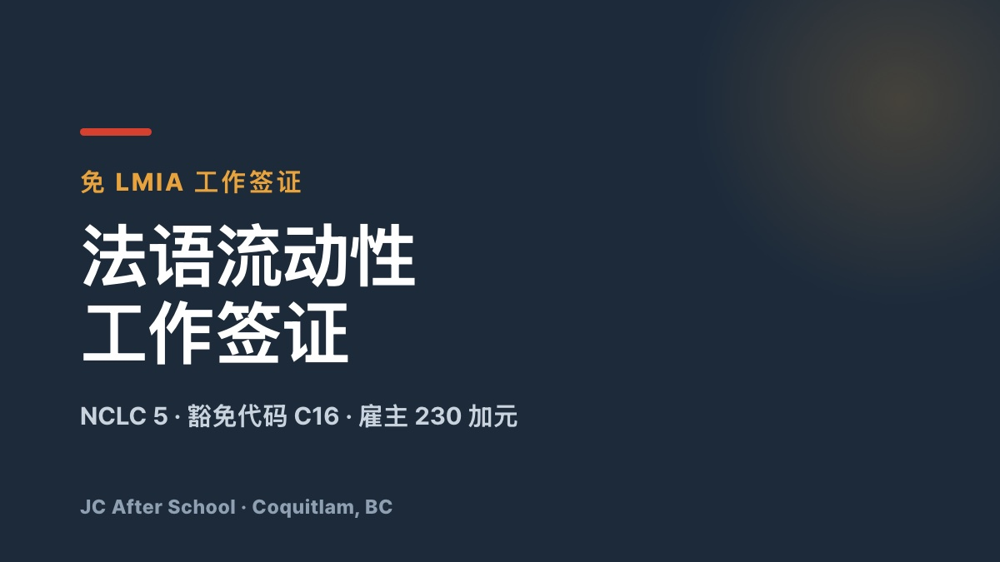

加拿大 LMIA 卡住了？用法语绕开它 🇨🇦

您好，这里是 JC After School — 陪您在加拿大落地生根的伙伴。
相信您已经听说，现在拿到加拿大工作签证有多难。雇主担保的 LMIA 审批越来越慢、越来越严，拒签率也在上升，不少人因此把赴加计划搁置了。
但是，有一个项目可以让您完全跳过 LMIA — 靠的不是英语，而是法语。
下面把目前最受关注的入境通道 法语流动性（Francophone Mobility） 的重点一次讲清楚。
💡 什么是法语流动性（Francophone Mobility）？
这是加拿大联邦政府为了壮大魁北克以外地区（BC、安大略、阿尔伯塔等）的法语人口而设立的免 LMIA 工作签证项目。
✨ 为什么现在法语是一件武器？
1. 雇主零 LMIA 负担（而且您照样可以用英语工作）
按常规流程，雇主要聘用外国人必须先花几个月时间和不小的费用去申请 LMIA。而法语流动性直接豁免这一步：雇主只需缴纳 230 加元的合规费，就可以直接聘用您。
这一点最多人误解：您并不需要用法语工作。工作完全可以用英语进行，您只需要证明本人具备法语能力。
2. 门槛大幅降低 — NCLC 5
2023 年修订之后，只需在 TEF 或 TCF 等官方法语考试中，口语与听力达到 NCLC 5（中级水平）即可申请。也不再局限于专业技术职位 — 除第一产业农业外，几乎所有职业都适用。
3. 通往永居的快车道
持此签证入境并积累工作经验后申请永居时，可以走法语人士专项抽签（Category-Based Draws），分数线远低于普通英语通道申请人。
🛠️ 只要记住三个条件
📋 详细资格要求 — IRCC 官方标准
该项目自 2023 年 6 月 15 日修订后条件大幅放宽，并沿用至今。要求分为「申请人条件」与「雇主条件」两部分。
1. 申请人资格
以下四项必须全部满足。
2. 雇主须先完成的手续 — LMIA 豁免流程
在您递交工作签证申请之前，加拿大雇主需要先在 IRCC 系统内完成以下步骤。
💡 一句话总结
在魁北克以外拿到非农业类职位的 offer，雇主在系统内完成登记并缴纳 230 加元，申请人再证明法语口语与听力达到 NCLC 5 以上 — 就可以免去繁琐的 LMIA，直接拿到工作签证。
🎯 特别推荐给这些人
正如 IRCC 官方网站所示，加拿大政府正为法语人士敞开大门。这样的窗口不会一直开着 — 现在就是开始学法语最好的时机。
📚 官方参考资料
📌 IRCC — Francophone Mobility Work Permit
资格要求、LMIA 豁免代码 C16、费用（申请人 155 加元 + 雇主 230 加元）等官方指引。
📌 IRCC — Francophone Mobility · How to apply
NCLC 5（口语·听力）的证明标准与线上递交流程。
📞 我也能走法语流动性吗？
从职业匹配到法语备考时间规划，不必一个人摸索。JC After School 与您一对一制定专属策略。
📞 电话咨询：778-258-2223
💬 KakaoTalk：进入开放聊天
📍 地址：#130 – 1140 Austin Ave, Coquitlam, BC
※ 本文依据 IRCC 现行指引撰写。项目规则可能变动，请务必以上方官方页面为准。